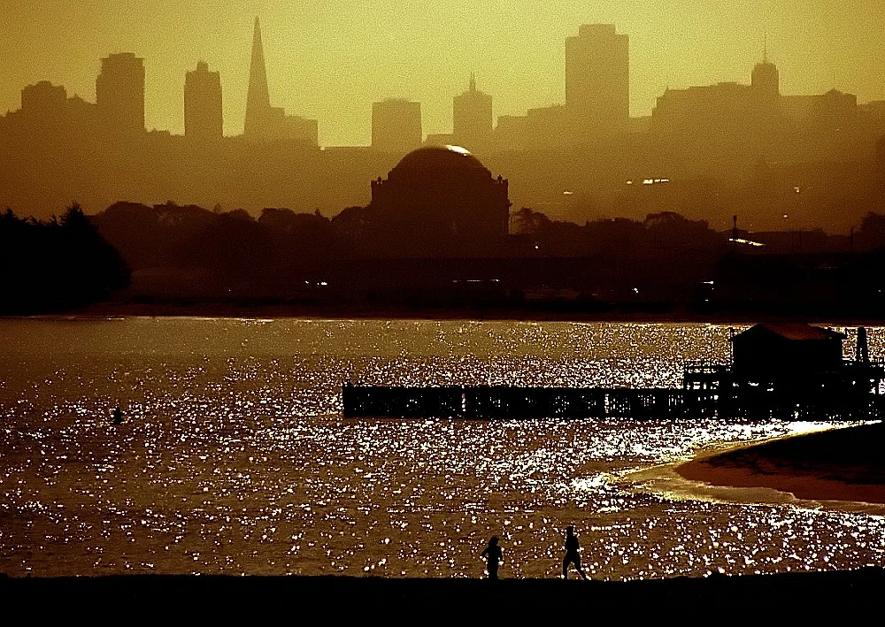
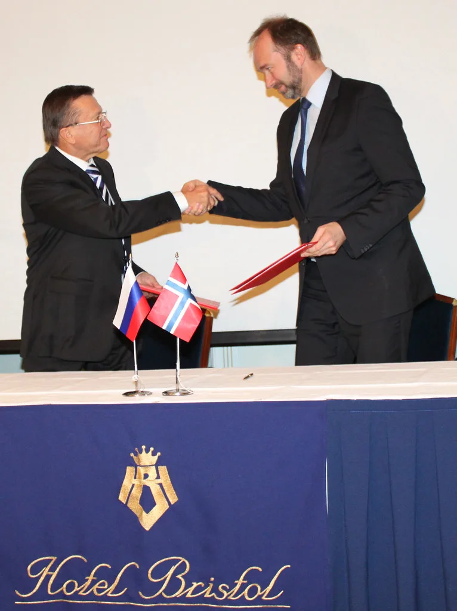

이재명 대통령, 美·남미 7박11일 순방…'샌프란시스코 AI 선언' 발표
이재명 대통령이 7월 24일부터 7박 11일간의 일정으로 미국 샌프란시스코와 브라질·칠레·아르헨티나 등 남미 3개국을 순방한다. 귀국길에는 독일 프랑크푸르트를 경유할 예정이다. 첫 방문지인 샌프란시스코에서는 글로벌 인공지능(AI) 산업을 이끄는 빅테크 최고경영자들과 잇달아 만나는 일정이 예정돼 있어, 순방 초반 이틀이 이번 외교 일정의 최대 분수령이 될 것으로 보인다.
이 대통령은 샌프란시스코 첫날 오전 다리오 아모데이 앤트로픽 최고경영자, 샘 알트만 오픈AI 최고경영자, 젠슨 황 엔비디아 최고경영자, 혹 탄 브로드컴 사장 겸 최고경영자를 순차적으로 면담한다. 이재용 삼성전자 회장, 최태원 SK 회장, 정의선 현대차그룹 회장, 이해진 네이버 의장 등 국내 주요 기업인들도 순방에 동행해 이들 면담에 함께하는 것으로 전해졌다.

이 대통령과 기업인들은 이어 '샌프란시스코 AI 서밋'에 참석한다. 이 행사에는 국내외 AI 기업 관계자와 연구자, 스타트업, 투자자 등 150여 명이 함께하는 것으로 알려졌다. 이 대통령은 이 자리에서 글로벌 AI 생태계에서 한국이 대체 불가능한 위치로 도약하겠다는 의지와 국제 협력 방안을 담은 '샌프란시스코 AI 선언'을 발표하고 토론에도 참여할 예정이다.
25일 오후에는 실리콘밸리의 주요 벤처캐피털 6개사와의 만남도 예정돼 있다. 국민연금공단과 현지 벤처캐피털 간 업무협약(MOU) 체결식에 이 대통령이 참석한 뒤, 한미 양국의 벤처 생태계 협력 방안을 논의하는 라운드테이블도 이어진다. 국부펀드 성격의 국민연금이 실리콘밸리 벤처 투자와 직접 연결되는 자리인 만큼 후속 논의에 관심이 쏠린다.

미국 일정을 마친 이 대통령은 26일부터 29일까지 브라질을 국빈 방문한다. 룰라 다시우바 브라질 대통령의 초청에 따른 것으로, 양국 정상은 정상회담과 함께 상파울루에서 열리는 한·브라질 비즈니스 라운드테이블(BRT) 행사에도 참석할 예정이다. 이어 30일에는 칠레 산티아고에서 호세 안토니오 카스트 대통령과, 31일에는 아르헨티나 부에노스아이레스에서 하비에르 밀레이 대통령과 각각 정상회담을 갖는다. 이 대통령은 30일 밤부터 8월 1일까지 아르헨티나에 머물 예정인데, 한국 대통령의 아르헨티나 공식 방문은 22년 만이다.
정치권과 재계에서는 이번 순방이 AI·반도체 분야에서 미국 빅테크와의 협력 수위를 가늠하는 동시에, 그동안 상대적으로 소원했던 중남미 국가들과의 경제·외교 관계를 복원하는 계기가 될지 주목하고 있다. 특히 남미 3국 순방은 자원·공급망 협력과 맞물려 있어, 정상회담 이후 구체적인 후속 조치가 나올지가 관전 포인트로 꼽힌다.
재계에서도 이번 동행 일정에 큰 관심을 보이고 있다. 국내 4대 그룹 총수급 인사들이 대통령과 함께 빅테크 최고경영자들을 잇달아 만나는 것은 이례적인 규모로, 반도체·AI 인프라 투자와 관련한 실질적인 논의가 오갈 가능성이 거론된다. 특히 엔비디아·오픈AI·앤트로픽 등은 데이터센터용 반도체 수요를 지속적으로 늘리고 있는 만큼 국내 반도체·배터리 기업들과의 공급 계약이나 투자 협력이 뒤따를지에 관심이 모이며, 정부는 대통령의 장기 순방 기간에도 국정 운영에 공백이 없도록 관계 부처가 주요 현안을 차질 없이 챙기겠다는 입장을 밝혔다.